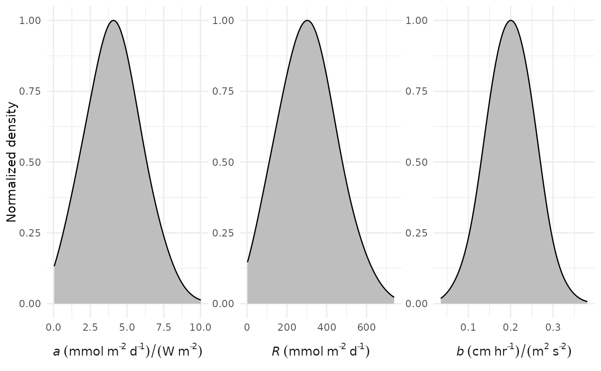
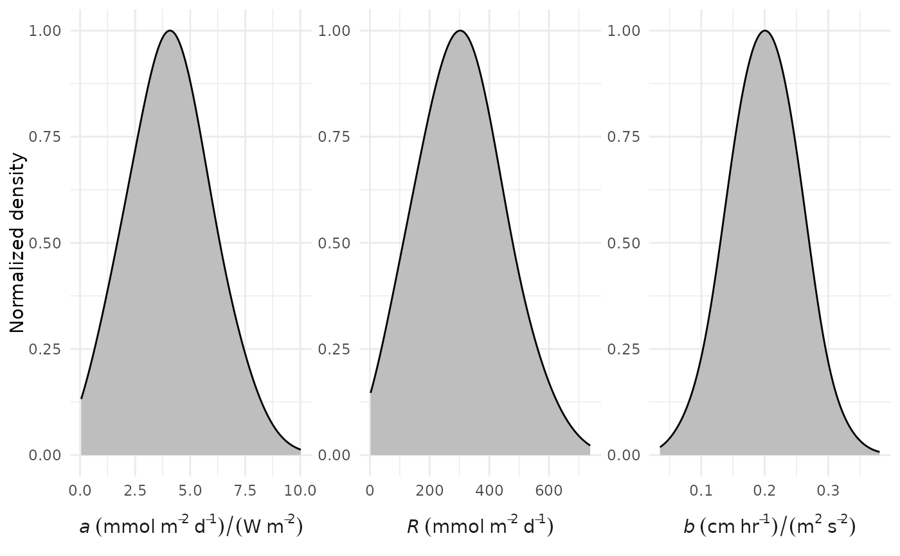

Plot prior distributions for a, R, and b
Arguments
- aprior
numeric vector of length two indicating the mean and standard deviation for the prior distribution of the a parameter, see details
- rprior
numeric vector of length two indicating the mean and standard deviation for the prior distribution of the R parameter, see details
- bprior
numeric vector of length two indicating the mean and standard deviation for the prior distribution of the b parameter, see details
- bmax
numeric value for the upper limit on the prior distribution for
bprior, set as twice the default value of the mean- n
numeric indicating number of random samples to draw from prior distributions
Value
A ggplot object
Details
This function produces a plot of the prior distributions that are used in ebase for the a, R, and b parameters for the optimization equation for estimating metabolism. The ebase function uses the same default values for the arguments for aprior, rprior, and bprior as required for this function. If the default values are changed for ebase, this function can be used to assess how changing characteristics of the prior distributions could influence the resulting parameter estimates and their posterior distributions (e.g., as shown with credible_plot.
All parameters follow a normal Gaussian distribution for the priors with the means and standard deviations defined by the arguments. All distributions are truncated to include only values greater than zero as required by the core metabolism equation. The upper limit for b is also set as twice the default value of the mean in the bprior argument. Truncated normal distributions are obtained using the rtruncnorm function with the number of random samples defined by the n argument.
The density curves for each parameter are normalized such that the peak values are always equal to 1.
Examples
# default plot
prior_plot()
 # changing the mean and standard deviation for the b parameter
prior_plot(bprior = c(0.2, 0.05))

# changing the mean and standard deviation for the b parameter
prior_plot(bprior = c(0.2, 0.05))
